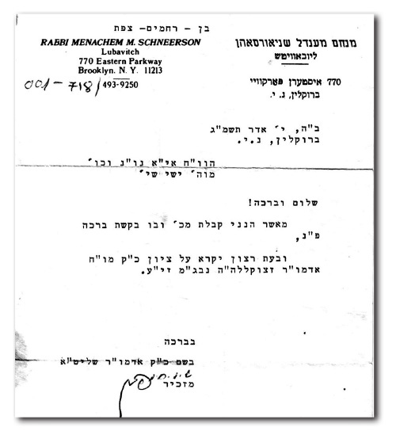

We Both Dreamt of the Rebbe That Night
“My wife told me that she had dreamt that night about the Rebbe, and when I heard this, it almost took my breath away. I too had dreamt about the Rebbe that night!”
Translated by Michoel Leib Dobry

TWO DAUGHTERS FIRST – A BEAUTIFUL SIGN
In the sukka of Yishai and Shulamit Ben-Rachamim on Yoseftal Street in Tzfas’ Canaan neighborhood, there’s a place of honor on the front wall for one large picture of a tzaddik – the picture of the Rebbe, Melech HaMoshiach. Despite the fact that they are not considered to be card-carrying members of the Chabad community, the family says that the sukka cannot be complete until they hang this picture that has been faithfully preserved for many years. One of their neighbors, R’ Yiftach Luzia, Chabad shliach in Machanayim, who visited the family’s sukka and saw the Rebbe’s picture, assumed that there must be a unique story behind this family custom. He was not mistaken.
“For us, the Rebbe is a giant among giants,” says Yishai, the head of the household, with great emotion. It would seem that their enthusiasm has not dimmed, despite the passage of time since he and his wife experienced a great miracle – thanks to the fulfillment of the Rebbe’s bracha. “We were privileged not just to receive a bracha, but also an amazing Heavenly sign. Today, we are the proud parents of two daughters, who have already married and given us three grandchildren – all in the merit of that marvelous bracha.”
***
Yishai was born and raised on the Galilean settlement of Yavniel, located near the holy city of Teveria. During his childhood, Chabad had not yet arrived in Yavniel. Thus, his knowledge about the Rebbe and Chabad was a bit vague, coming primarily from the newspapers. In contrast, his wife Shulamit grew up and was educated in Tzfas. She knew quite well about the Rebbe and his greatness. Even as a young girl, she was familiar with the large Chabad community that had been established in Tzfas.
“In 5740, we were married in a good and auspicious hour,” recalled Yishai from those times. “However, to our great regret, months and years passed, and we still hadn’t merited having children. After four years of marriage, my wife and I began to be quite concerned that we might never become parents. This concern of ours intensified in light of the fact that we had gone to prominent doctors for fertility examinations and treatments, and the results showed little or no hope of success. The doctors were unable to give a professional diagnosis for our situation. ‘Everything is in proper order,’ they told us, and this just distressed us even more.
“When our accompanying physician, Dr. Blanca, said that he saw no apparent cause that he could treat with conventional medical cures, we turned to more spiritual channels.
“In the meantime, I began to learn about Chabad Chassidus. In the synagogue where I prayed, they would bring Chabad brochures. We heard about the spiritual salvations that took place with the Rebbe’s brachos, and we also wanted to write to the Rebbe and request his holy blessing. The person who helped us was Rabbi Baruch Menachem Mendel Kumer from Kiryat Chabad in Tzfas. The first time when we wrote, we were certain that the Rebbe would give us a reply within a day or two. However, this was not to be the case. Months passed, and we had not received an answer.
“When we wrote a second time, we still failed to get a reply. Chassidim explained to us that we have already received our bracha, but this rationalization did not satisfy us. We obtained the phone number of the Rebbe’s secretariat in 770, and I explained our plight to the secretary. He told me that the Rebbe chooses the time to answer, and one can’t get brachos by force. After he said that we would simply have to be patient, he then suggested, ‘If you want, write a third time.’ Many years had now passed; nevertheless, we refused to despair and we would not lose hope.
“One morning, my wife woke up in a state of great excitement. She told me that she had dreamt that night about the Rebbe, and when I heard this, it almost took my breath away. I too had dreamt about the Rebbe that night! My wife said that in her dream, she saw the Rebbe in our home sitting in the living room, his face shining with a unique sparkle. She felt that the Rebbe was bestowing a sense of tranquility and hope that everything would be fine, and this period of trial would soon come to an end. In my dream, I saw the Rebbe waving his hand. We felt that there was a special meaning to all this; it was not just some coincidence.
“When my wife returned home from work the following day, she passed by the mailbox and was totally thunderstruck. Among the letters was one sent to us by the Rebbe. I was at work at the time when I received an urgent phone call from her. ‘Yishai, you won’t believe it. The Rebbe sent us a letter!’ I never felt anything like I did on that day. My wife was so overcome that she slipped on the steps on her way into the house. I asked her to wait until that evening, and we would open the letter together. What did the letter say? We didn’t understand a thing.
“The next day, we met with Rabbi Kumer to get an explanation.
“The Rebbe had written as follows: I confirm receipt of his letter, including a request for a bracha (pidyon nefesh), and it will be read at a befitting time at the Tziyon of my holy and revered father-in-law, the Rebbe, of righteous memory, his soul rests in the hidden treasures of Heaven, may his merit protect us.
“For me, these words were merely a riddle. I didn’t understand what the Rebbe meant. However, Rabbi Kumer was positively ecstatic. ‘You have the Rebbe’s bracha. Remove all worry from your hearts,’ he reassured us. And so it was. That month, my wife went back to Dr. Blanca, who saw that we had already done all the possible examinations. He suggested that she fill a new prescription of capsules, which she should take on a daily basis, although his pessimism was quite evident.
“There’s no chance that you’ll get pregnant during the coming year,” he told her. But the reality proved otherwise… Within two months, the Rebbe’s bracha had been realized and we were given the good news. One can just imagine the tremendous joy that engulfed us at that moment. Our feelings were simply indescribable. This was a miracle above and beyond nature.
“When we came to Dr. Blanca to inform him that my wife was going to have a baby, he was positively stunned. He said that since he had given up on all the pills, tests, and other treatments, he had decided to follow another course. The capsules he had given my wife were only vitamins… He couldn’t believe that they would bring about any change in the situation.
“Nine months later, we welcomed the arrival of our first child, a sweet and beautiful baby girl. She had been born through a totally normal and easy birth. We gave her the name Rachel – after Rachel Imeinu. Today, Rachel is married, has completed her degree in economics and business administration, and she is also the mother of three wonderful girls – our granddaughters. Later, we were blessed with the birth of another daughter.
“They too are quite aware that without the Rebbe’s blessing, who knows if we ever would have been privileged to have them…
“Naturally, ever since then our family has given a place of honor to the Rebbe and Chabad Chassidus as a sign of ever-growing appreciation and admiration.”
LAND O’ GOSHEN!
For many years, R’ Sharon Goshen, an attorney by profession, thought about whether he should publicize the miracle he experienced as a young boy with the Rebbe’s bracha. However, when his mother recently revealed a special detail of the story that he had not known previously, he finally consented to do so, in accordance with the instructions of the Rebbe, Melech HaMoshiach, to publicize miracles.
While he was only seven years old at the time of this story, he apparently remembers every detail with the utmost clarity. Such a traumatic experience obviously could not be forgotten so quickly, as a glance at his right pinkie immediately reminds him of those difficult days of painful medical treatment.
***
“The story began one Shabbos during the winter of 5744,” R’ Sharon said as he opened his story. “I was just seven years old then, and my twin brother and I joined our father, as we always did on Shabbos morning, at the ‘HaPoel HaMizrachi’ synagogue in the area where we were living at the time. Sitting in shul next to our fathers for the entire davening was an absolutely impossible task for children my age to fulfill. Thus, during the minyan, my friends and I would go outside and play together near the entrance gate to the synagogue. We went on the seesaw, climbed and jumped, while we kept up a lively conversation.
“As we were playing, I placed the little finger of my right hand between the hinges of the gate. Not realizing this, my brother proceeded to close and open the gate, crushing my finger in the gap. While I now realize that my finger had been dislocated from the rest of my hand at that moment, incredible as it may seem, I felt no unusual pain. In an attempt to stop the flow of blood from my finger, I quickly went to the faucet in the women’s section to wash my hand off. I thought that this was just a minor cut that would quickly heal. I was in no panic; on the contrary, I remember that I was calm and quiet. I even laughed and smiled.
“Eventually, the women in shul alerted me to the seriousness of the injury I had sustained. When they noticed the large quantity of blood pouring out of my finger, they frantically called for my father. It was only then that I realized that this was not just a minor injury; my finger has been severely cut. My father didn’t waste any valuable time, as there were no cell phones in those days and there was no regular phone anywhere in the shul. I remember that we went out in the street together, as my father stopped someone riding a bicycle. He explained the gravity of the situation to the young man, who immediately agreed to lend the bicycle to my father for the purpose of transporting me home as quickly as possible.
“As we neared our home, we saw my mother coming down the stairs with a baby carriage, on her way to shul with my younger brother. When she saw my father pedaling with me on a bicycle instead of being in shul, she realized that there was something seriously wrong. Still, my father tried to assure that everything would be all right. She got the keys to the family car and we sped to the nearest hospital – the Wolfson Medical Center in Cholon. All the while en route to the emergency ward, my finger continued to bleed nonstop. Upon arrival at Wolfson, they did an x-ray and then sent me straight to the operating room.
“While the doctors did manage to stop the bleeding, they were unable to suture the finger. After a few days in the hospital, I was released home. Every few days, I went to our local health clinic for a follow-up examination with our family physician.
“I suffered a great deal during that period. At each visit to the health clinic, the nurse would have to change the bandage. Dead flesh would be growing underneath, and she removed it each time by applying a painful antiseptic solution. This unpleasant process repeated itself for several months. Our family doctor tried to encourage us, as he expressed his belief that the finger would eventually heal and there would be no need for an amputation – something that usually occurred in a case of gangrene.
“One month during that summer, the family doctor went on a lengthy vacation and put another physician in charge of my case in his absence. This doctor turned out to be a highly trained specialist. He did not agree to continue the current treatment as prescribed by the first doctor, and he immediately asked to see my medical folder. After looking through the file, he asked my father when I had last had an x-ray done. The doctor was stunned to hear that we had not done any x-rays since the initial visit to the emergency room on the day I sustained the injury. Unlike today, it could then take a long time, perhaps months, to wait for an appointment to do an x-ray.
“The doctor used all his connections to arrange for a prompt appointment, and within a few days, I went in for an x-ray and we brought him the results. As he looked at the pictures, the doctor’s face suddenly became quite somber as he described the situation to us in very dismal terms. He said that he saw how gangrene had developed in my right little finger, and it was beginning to spread. Unless the gangrene was treated properly, it could affect the entire hand and even more. He quickly gave his diagnosis: the finger must be amputated.
“The doctor’s evaluation stunned my parents; they had never dreamed things that were so serious.
“Naturally, the first thing they did was to write to the Rebbe. They described everything that had happened and asked for his advice and a bracha. The Rebbe’s answer was: ‘Bracha v’hatzlacha. Seek the advice of a doctor acquaintance.’ My parents were friends with a Dr. Agassi from Ramat Gan, a prominent surgeon, and they went to see him with the x-ray pictures to seek his advice, as the Rebbe had instructed. After checking the x-rays, he immediately said that he agreed with the recent diagnosis. However, he also mentioned other possibilities regarding the operation. He debated whether he should only remove the finger’s upper joint and hope that the remaining joints would heal properly, or if he should just amputate the entire finger to avoid any further complications that could possibly develop later, requiring additional surgery.
“Each finger has three joints, and the gangrene was situated between the upper and middle joints. Any doctor would say that the preferred course would be amputating the entire finger, thereby removing all the gangrene with far greater certainty. However, for some reason, he didn’t approve of this option. He eventually decided to take the risk, and he ordered the removal of the finger’s upper joint only. ‘No other doctor would take such a chance,’ Dr. Agassi explained. ‘He simply would have amputated the entire finger.’
“The operation took place at Assaf HaRofe Hospital in Tzrifin, near Kfar Chabad, and Dr. Agassi himself was the surgeon.
“After I had recovered from the operation, the doctor entered my room and asked me if I was feeling any pain. I told him that I wasn’t. What happened afterwards I don’t remember, but my mother reminded me about it this past Shabbos, and I decided to tell this story as a result.
“The doctor asked me to take my right palm and strike it on the table. After I did as he requested, he asked me if I had felt any pain. I again told him that I hadn’t. He looked at me and my parents totally stunned and elated, and then he said:
“‘Look, I’m not a religious Jew, but what happened here is an absolute miracle, something that totally contradicts all medical principles. I don’t know what great merits you have, but there’s always a lot of intense discomfort after such an operation, the type that can only be relieved through taking painkillers…’
“In the end, the risk that the doctor took in amputating only the upper joint of my finger proved to be correct. The differing opinion of our family physician and all prevailing laws of medicine had called for the removal of all three joints – the entire finger,” said R’ Sharon as he concluded his story.
“Thirty years have passed since then. Everything has completely healed, and the missing portion of the finger goes virtually unnoticed. I don’t even want to think what would have happened if my parents hadn’t received the Rebbe’s advice to consult with a doctor acquaintance…”
Nosson Avrohom. "We Both Dreamt of the Rebbe That Night." Beis Moshiach, no. 861 (December 21, 2012).